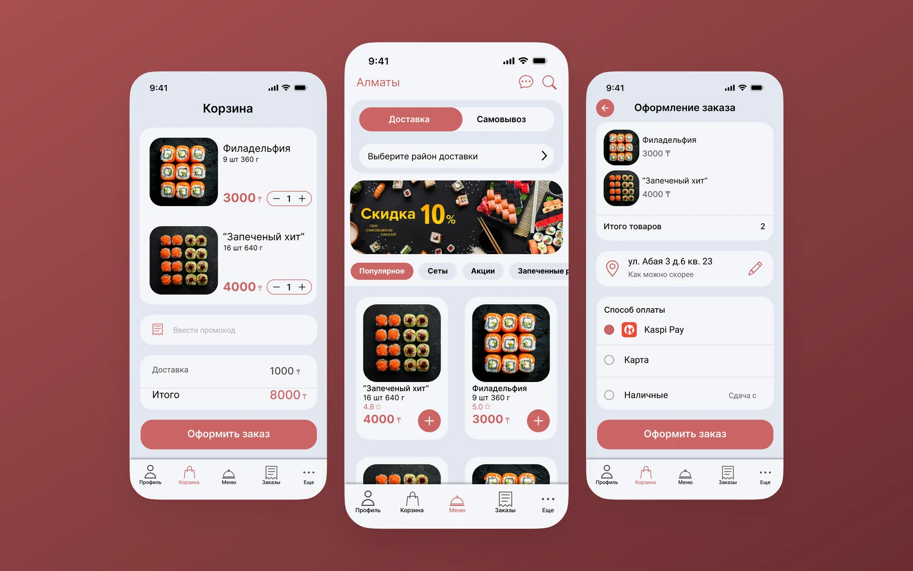
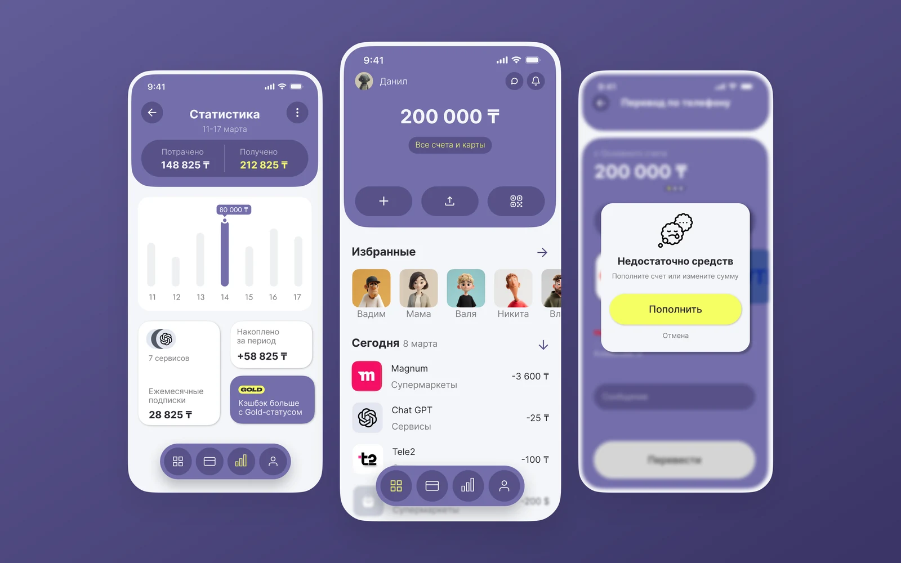

Ресторанное приложение

Доставка суши: быстрый заказ, понятный трекинг и UX-аудит референса. Проработаны состояния: загрузка, ошибка сети, пустая корзина, промокод.
Смотреть кейс →Банковское приложение

Перевод по номеру в три экрана: банк получателя определяется автоматически. Проработаны состояния ошибок, включая «Недостаточно средств».
Смотреть кейс →Дашборд для бизнеса
Задача
Спроектировать панель управления для владельца сети фитнес-клубов. Пользователь не аналитик, ему нужно видеть ключевые метрики бизнеса в одном месте и принимать решения без запросов к аналитикам. Данные должны быть наглядными и понятными с первого взгляда.
Решение
5 разделов по смыслу бизнеса: Финансы, Клиенты, Абонементы, Тренировки, Маркетинг. Каждый раздел отвечает на конкретный вопрос владельца и помогает принять решение. Метрики сверху дают быстрый ответ, графики показывают динамику, таблицы дают детали. Каждая метрика сравнивается с прошлым периодом.
Результат
Владелец заходит утром и за 2 минуты видит состояние бизнеса: деньги, клиентов, абонементы, загруженность зала и маркетинг. Не нужно ждать отчёта от аналитика, все данные на одном экране. Каждый раздел помогает принять конкретное решение: что продавать, когда добавлять тренеров, куда перенаправить рекламный бюджет.

KIVI, школа татуировки
Задача
Сделать сайт школы татуировки с понятной структурой: познакомить с программой и перевести интерес в запись на бесплатный пробный урок.
Решение
Лендинг на Tilda с формой записи на пробный урок, блоками о программе и преподавателях, последовательным путём от первого экрана до заявки.
Результат
Сайт стабильно приводит около 50 заявок в месяц на пробный урок и записи на обучение. Стал основным каналом привлечения учеников для школы.

Coffee Dream
Задача
Реализовать классическую продающую структуру сайта: от первого экрана с обещанием до формы заявки, без потери внимания на пути между ними.
Решение
Тёплая кофейная палитра, пара шрифтов (Playfair Display + Inter), последовательные блоки — обещание, выгоды, процесс подключения, галерея, отзывы, заявка. Добавил интерактивный калькулятор инвестиций на React: выбор формата точки и суммы вложений, прибыль и срок окупаемости пересчитываются сразу. Адаптивная вёрстка.
Результат
Полная продающая воронка: от первого экрана до формы. Адаптив. Готов к запуску и подключению рекламы.


Hear AI
Задача
Спроектировать лендинг для презентации AI-диктофона: устройства, которое записывает и структурирует разговоры, с акцентом на премиальный, технологичный образ продукта.
Решение
Сделал тёмную сцену с крупным рендером устройства как главный акцент. Использовал минималистичную типографику и один явный призыв к действию. Структура лендинга быстро отвечает на вопросы: что это, какую пользу даёт и почему стоит оформить предзаказ.
Результат
Концепт-лендинг для презентации AI-гаджета с акцентом на премиальный образ и один CTA — предзаказ. Готовый визуальный концепт продукта. Можно использовать для питча или дальнейшего запуска.

Балашов Данил Кириллович

Я UX/UI дизайнер с маркетинговым образованием. Проектирую интерфейсы для веб-платформ и мобильных приложений: пользовательские сценарии, прототипы, адаптивные макеты и дизайн-системы. Понимаю, как дизайн влияет на конверсию: за плечами запуск онлайн-курса и лендинга, который приносит заявки. Живу в Алматы, открыт к офисной и удалённой работе.
Скачать резюме (PDF)Люблю рок-музыку, шиншилл и мармелад. В свободное время играю на электрогитаре и прохожу Elden Ring.
Опыт работы
- Создал и вёл сайт школы: лендинг с формой записи на пробный урок. После запуска сайт стабильно приносит около 50 заявок в месяц и стал основным источником новых учеников
- Разработал продающие презентации для пробных уроков. Они использовались на всём протяжении занятия, для прогрева аудитории и продажи курса.
- Разработал проект по улучшению городской инфраструктуры и лично представил его мэру Казани, главному архитектору и пресс-секретарю заместителя руководителя исполкома.
- Проект принят в работу: реализуется 5 предложенных идей, от менее затратных к более затратным.
- Подготовил презентации и материалы для переговоров с лицами, принимающими решения.
- Работал с руководителями отделов и структурных подразделений в жёстких сроках.
- Создал и самостоятельно запустил онлайн-курсы по игре на электрогитаре и барабанах, а также по сведению и мастерингу. Провёл обучение 100+ учеников лично в Discord.
- Самостоятельно делал весь визуал и продукт: рекламные креативы, обложки, оформление сообщества, Telegram-чат со встроенным ботом (около 100 участников).
- Выстроил продажи на пакетах занятий и привлекал учеников через таргетированную и контекстную рекламу при бюджете менее 50 000 ₽.
Навыки
Образование
КНИТУ, Институт управления инновациями (ИУИ) — высшее образование. Маркетинг, Издательское дело, Делопроизводство. Сентябрь 2022 – Июль 2026
Языки
Русский: родной
Английский: B1
Казахский: изучаю
Контакты
+7 707 298 22 01 · danilbalashov82@gmail.com · Telegram, Instagram: @Slu1garden